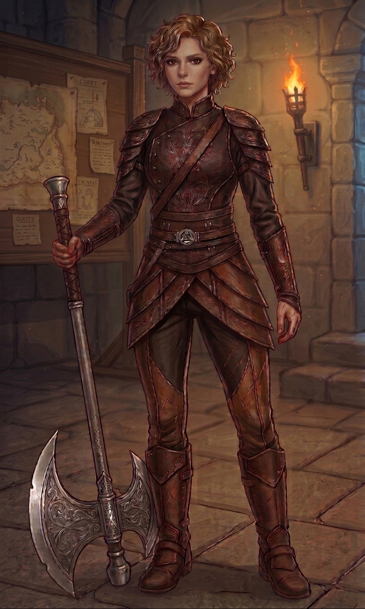
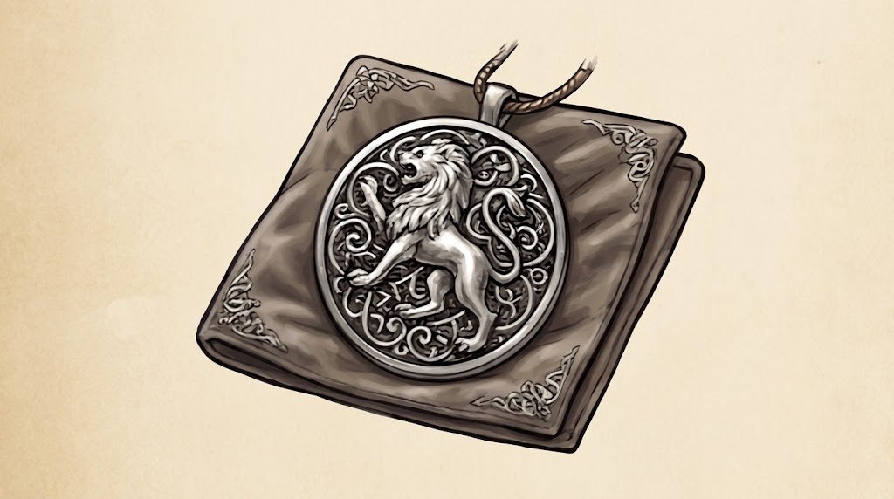

Aldrya Haldren, a Portadora do Legado
Sobre o Herói

Aldrya Haldren nasceu na pequena vila de Eirnholm, no reino de Valdren, descendente de uma antiga família de guerreiros responsáveis por guardar o lendário machado Haldra. Desde criança, foi treinada por seu pai, enquanto sua mãe cuidava da comunidade e ensinava Aldrya a proteger aqueles ao seu redor. Aos 17 anos, sua vila foi atacada por um grupo de mercenários. Durante o confronto, Aldrya foi ferida e perdeu seus pais e seu irmão mais novo. Antes de morrer, seu pai entregou a ela o Herdeiro, tornando-a a última guardiã do legado de sua família. Desde então, Aldrya percorre o reino como guerreira, carregando consigo o machado e as lembranças de sua família.
Atributos & Habilidades
Força
9/10
Destreza
7/10
Constituição
9/10
Inteligência
5/10
Sabedoria
6/10
Carisma
8/10
- Passivas de Combate
- Mestra do Machado: Concede +2 no bônus de ataque e +1d8 de dano extra ao utilizar machados de duas mãos.
- Legado Haldren: O machado Haldra ressoa com o sangue da usuária, escalando seu dano base conforme o nível de personagem de Aldrya.
- Habilidades Espaciais
- Fúria Haldren: Ativa automaticamente quando os Pontos de Vida (PV) ficam abaixo de 25%. Aumenta o atributo de Força em +4 e concede resistência a dano físico por 3 rodadas.
- Último Fôlego: Ao sofrer dano que reduziria seus PV a 0, Aldrya cai para 1 PV em vez disso e ganha 1 rodada extra de ação imune a nocaute. (Uso: 1x por descanso longo).
- Haldra Desperta: Quando um aliado da família é reduzido a 0 PV, Haldra emite uma aura reluzente, adicionando +2d6 de dano de energia a todos os seus ataques até o fim do encontro.
Inventário
O antigo machado da família Haldren. É a principal arma de Aldrya e o símbolo do legado de sua família.
A antiga capa de seu pai. Aldrya a mantém consigo desde a destruição de Eirnholm.

Um pequeno medalhão que pertenceu à sua mãe. É uma das poucas lembranças físicas que Aldrya ainda possui de sua família.
Inclui corda, pederneira, cantil, comida, algumas bandagens e ferramentas básicas.
Contato com a Guilda
Quer conhecer mais sobre o meu trabalho?
Ou entre em contato pelas senguintes plataformas:
Linkedin
Github